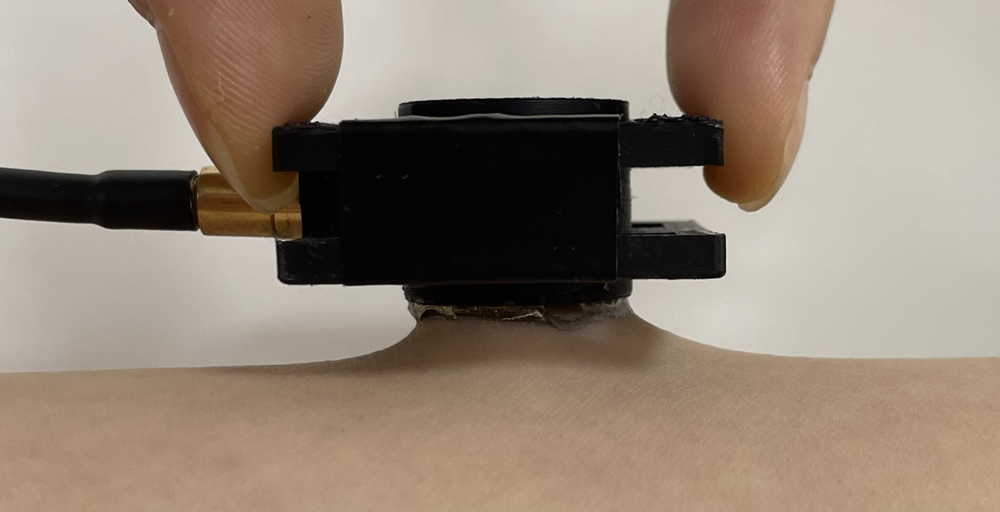
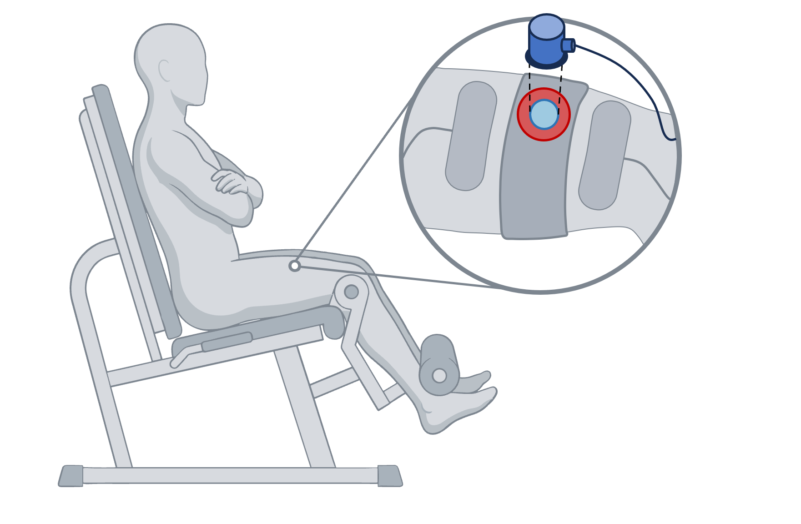
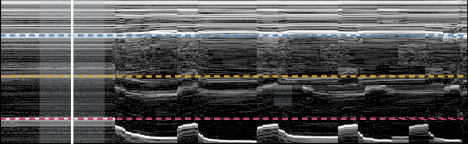

Ultrasound sees muscle that electrodes cannot. Making it wearable takes an interface that stays on skin, a transducer that bends, and a circuit that reads it untethered.
M.S. candidate, Mechanical Systems Engineering, Sookmyung Women's University
B.S., Chemical and Biological Engineering
Precise muscle monitoring needs force and joint motion read together. IMUs give kinematics but no force, and surface EMG gives activation but cannot reach deep muscle, so our lab is building one wearable module that fuses ultrasound, EMG and IMU. Ultrasound is the only one of the three that reaches deep muscle, and the only one that still cannot stay on skin for a working day — the couplant dries within hours and never adheres. I show that in AMPS hydrogels acoustic transparency and skin adhesion are governed by the same compositional variable, so no single composition satisfies both, and resolve that constraint geometrically rather than chemically. The resulting couplant stays coupled for 24 h and supports 71 consecutive measurement cycles from one attachment.
Two literatures have grown around hydrogel couplants — one measuring acoustic transparency, the other adhesion — and neither measured both on one compositional series. I came to this from the materials side, which is why the bottleneck I saw was interfacial chemistry rather than transducer design.
Across 20 to 40 wt% AMPS, attenuation rises 2.59-fold and 90° peel strength 3.6-fold along the same axis.
A single-composition couplant is therefore a compromise whose size is set by the material rather than by the design — a negative result nobody had published.
Earlier work stacked adhesive on acoustic, under a quarter wavelength so the stack would not register. I divided them radially instead: a transparent core inside an adhesive edge, sized so the beam never reaches the edge.
The condition contains no wavelength, so it does not depend on the operating frequency, and it carries no thickness budget. Freed from the attenuation constraint, the edge can be chosen on adhesion alone.
| Metric | Couplant | Benchmark |
|---|---|---|
| 90° peel on glass | 22.6 · 5.6× | 3.99 |
| 90° peel on skin | 33.5 · 3.3× | 10.2 |
| Mass kept at 5 h | 77% | 3× lower |
| Phantom coupling | 24 h · 5/5 | 12.0 h · 0/5 |
Peel strength in N m⁻¹ against a commercial adhesive hydrogel; mass against ultrasound gel; coupling as runs still intact at 24 h. Gel lost 40 dB of back-wall echo over the same day while the couplant held within one. Log-rank p = 0.0018.

Across 13 sessions and 71 measurement cycles, the couplant was never re-applied within a session.


skin + fat rectus femoris vastus intermedius femurSolving the interface moved the limit one layer out. A conformal element removes the housing, the strap and the pressure point at once — and the specification it has to meet is already fixed by layer 1.
| Survives | The core-wider-than-aperture condition holds no wavelength, so a new element does not invalidate it. |
| Re-derive | It was set against a flat 8 mm face; a curved element needs the core sized for a curved footprint. |
| Gets easier | 33.5 N m⁻¹ on skin can supply the contact pressure the strap supplies now. |
| Becomes the test | Back-wall amplitude, temporal SNR and reverberation ratio transfer as the acceptance bar. |
The open question is whether bending walks the beam out of the core.
Every number on this page was acquired through a coaxial cable to a benchtop pulser-receiver. The metrics that decide whether a couplant failed also decide whether a front end is good enough, so this layer inherits a specification rather than a wish list.
| Dynamic range | Gel collapse spans 40 dB; the couplant holds within 1 dB. The front end must resolve a decibel across that span. |
| Noise floor | 43–56 dB temporal SNR is what the benchtop system delivers today — the number to approach. |
| Duty cycle | Acquisition is sparse rather than continuous, which changes the power budget entirely. |
| Depth | Reaching bone through the quadriceps at 5 MHz sets the time-of-flight window and sampling rate. |
Each layer removes one reason the measurement has to happen in a laboratory. The couplant removed re-application; the transducer removes the housing; the circuit removes the room.
Y. Lee et al. “Decoupling Adhesion from Acoustic Attenuation: A Concentric Hydrogel Couplant for Long-Duration Wearable Ultrasound.”
First author · prepared for Advanced Healthcare Materials · 9,025 words, 5 figures, 2 tables, 22 SI items · IRB approved
wearable ultrasound · hydrogel couplant · acoustic attenuation · skin adhesion · muscle fatigue monitoring · sonomyography · flexible electronics · biosignal analysis
Yeeun Lee · Mechanical Systems Engineering, Sookmyung Women's University · linkedin.com/in/yeeunlee-smwu